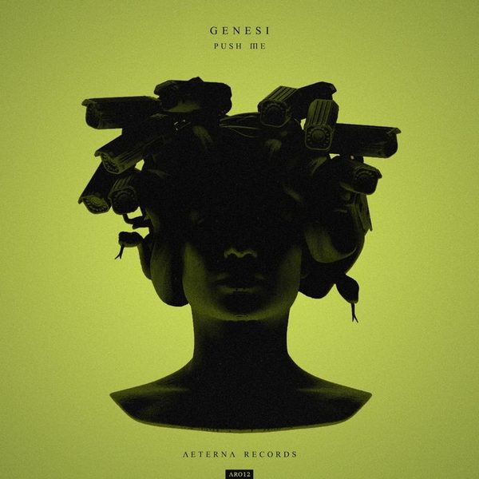

I 18 dischi
 1
On AgainMau P
1
On AgainMau P
 2
EmergencyLucas & Steve
2
EmergencyLucas & Steve
 3
Let's Get FuckedSMACK feat. Mingue
3
Let's Get FuckedSMACK feat. Mingue
 4
SatisfactionJohn W, Allison Nunes
4
SatisfactionJohn W, Allison Nunes
 5
Stay TogetherVula, Pickle, Joel Corry
5
Stay TogetherVula, Pickle, Joel Corry
 6
The Rhythm of the NightAlesso
6
The Rhythm of the NightAlesso
 7
LowBlack V Neck, JKATZ
7
LowBlack V Neck, JKATZ
 8
Wild (Matt Sassari Remix)James Hype
9
HypnotizeAlesso
8
Wild (Matt Sassari Remix)James Hype
9
HypnotizeAlesso
 10
Face the MusicLouis X
10
Face the MusicLouis X
 11
MountainsJonas Blue x Galantis x Zoe Wees
11
MountainsJonas Blue x Galantis x Zoe Wees
 12
In My MindRavekings & SandPokers
12
In My MindRavekings & SandPokers

13 Push MeGENESI (ITA) 14
DiganeBOB SINCLAR & SOFIYA NZAU
14
DiganeBOB SINCLAR & SOFIYA NZAU
 15
Rubber DuckDante Klein
15
Rubber DuckDante Klein
 16
FireMEDUZA, OneRepublic, Leony
16
FireMEDUZA, OneRepublic, Leony
 17
Underground RiddimVato Gonzalez
17
Underground RiddimVato Gonzalez
 18
Smalltown BoyDon Diablo
18
Smalltown BoyDon Diablo
La tracklist
- 1 On Again Mau P Insomniac Records
- 2 Emergency Lucas & Steve Spinnin' Records
- 3 Let's Get Fucked SMACK feat. Mingue Revealed Recordings
- 4 Satisfaction John W, Allison Nunes The Tribal Records
- 5 Stay Together Vula, Pickle, Joel Corry Defected Records
- 6 The Rhythm of the Night Alesso 10:22PM/Body Hi
- 7 Low Black V Neck, JKATZ Retail Records
- 8 Wild (Matt Sassari Remix) James Hype STEREOHYPE
- 9 Hypnotize Alesso 10:22PM/Body Hi
- 10 Face the Music Louis X BMG Rights Management (UK)
- 11 Mountains Jonas Blue x Galantis x Zoe Wees Positiva
- 12 In My Mind Ravekings & SandPokers FONK Recordings (Official)
- 13 Push Me GENESI (ITA) AETERNA Records
- 14 Digane BOB SINCLAR & SOFIYA NZAU Time Records
- 15 Rubber Duck Dante Klein House Of House
- 16 Fire MEDUZA, OneRepublic, Leony Universal-Island Records
- 17 Underground Riddim Vato Gonzalez Hexagon
- 18 Smalltown Boy Don Diablo Hexagon